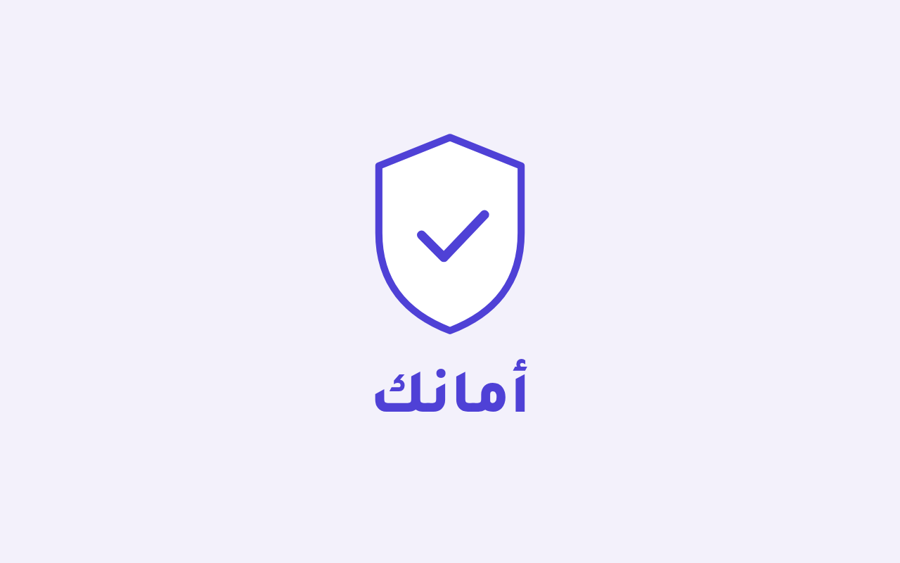
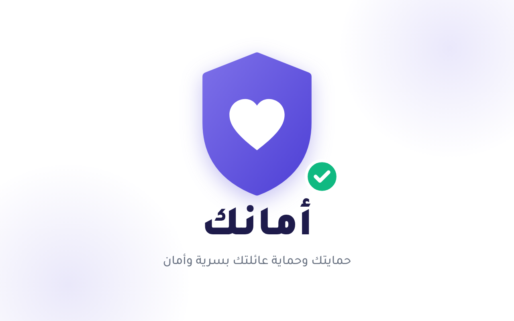
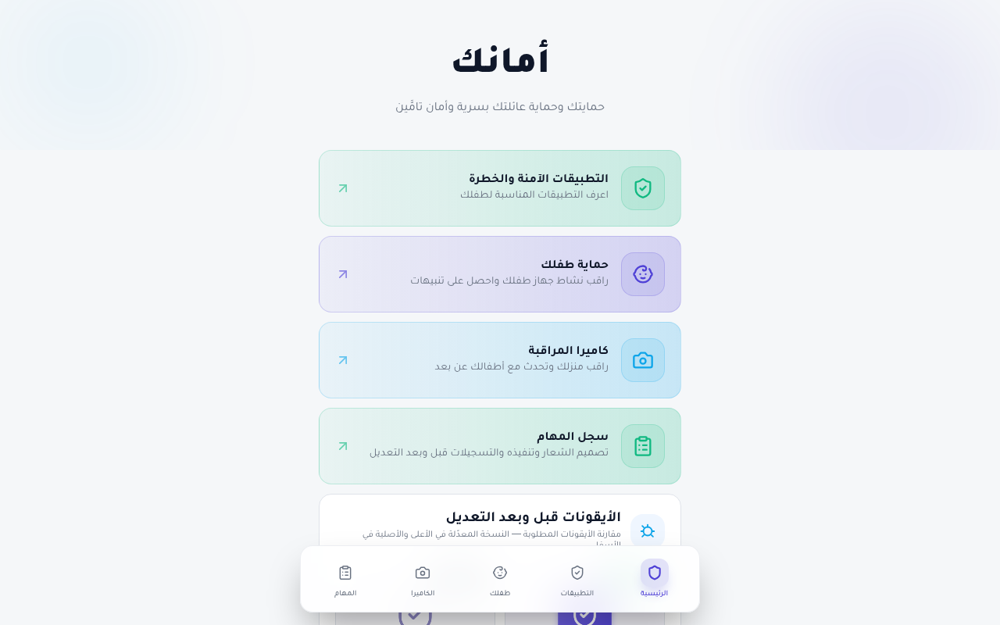
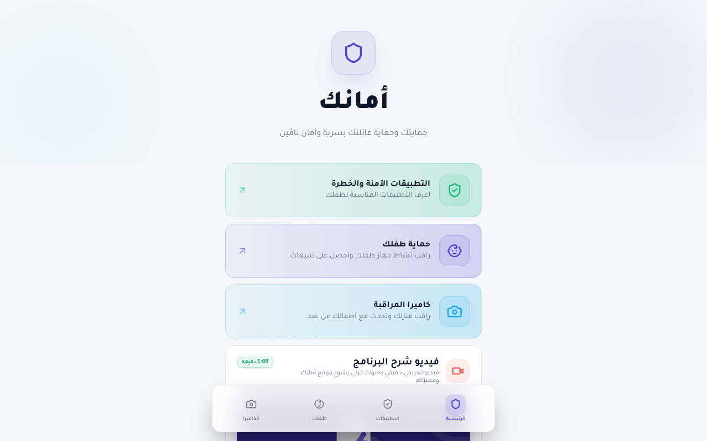
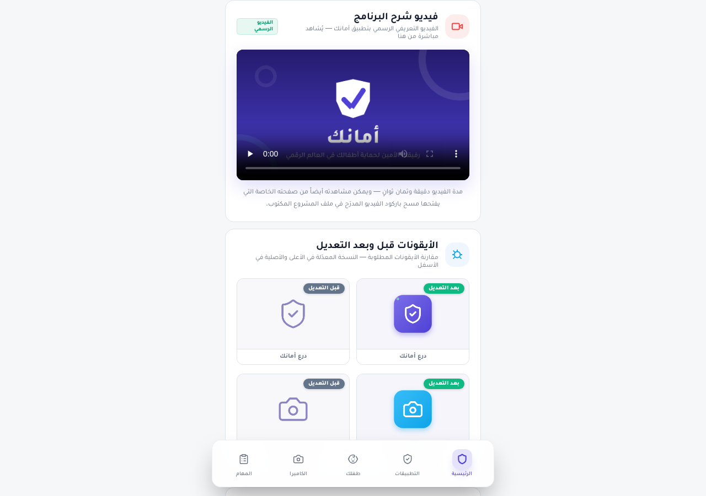
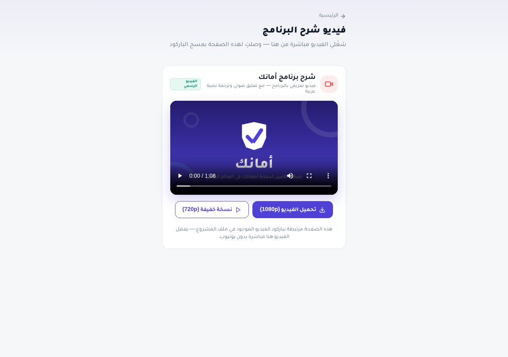

سجل المهام
توثيق مراحل تنفيذ مشروع أمانك — من الفكرة إلى التنفيذ
تصميم الشعار — تطبيق أمانك

تنفيذ الشعار

نُفِّذ الشعار باستخدام برنامج: Canva
ألوان الصفحات في الموقع متناسقة مع ألوان الشعار النهائي.
التسجيل الرابع — قبل وبعد التعديل


كتابة السيناريو
سيناريو الفيديو التعريفي لتطبيق أمانك — مكتوب نصاً واضحاً ودقيقاً مقسّماً إلى مشاهد موقّتة متدرجة من الترحيب حتى الدعوة الختامية، وجُمِعت مشاهد الفيديو على نصه.
البرنامج المستخدم في كتابة السيناريو: Microsoft Word
مشاهد السيناريو وتوقيتاتها
| المشهد | التوقيت | نص التعليق الصوتي |
|---|---|---|
| 1 | 0:00 – 0:08 | أهلاً وسهلاً بكم في أمانك، رفيقكم الأمين لحماية أطفالكم في العالم الرقمي. |
| 2 | 0:08 – 0:19 | يقدم أمانك دليلاً متكاملاً للتطبيقات الآمنة والخطرة، مع تقييم واضح لكل تطبيق حسب الفئة العمرية المناسبة. |
| 3 | 0:19 – 0:29 | راقبوا نشاط أجهزة أطفالكم لحظة بلحظة، واحصلوا على تنبيهات فورية عند رصد أي نشاط مقلق. |
| 4 | 0:29 – 0:38 | ومن خلال كاميرا المراقبة، شاهدوا منزلكم من أي مكان في العالم، وتحدثوا مع أطفالكم وجهاً لوجه. |
| 5 | 0:38 – 0:48 | الخصوصية أولاً: جميع بياناتكم مشفرة بالكامل من الطرف إلى الطرف، ولا يطلع عليها أحد سواكم. |
| 6 | 0:48 – 0:58 | ابدأوا رحلتكم في ثلاث خطوات فقط: اربطوا الأجهزة، اضبطوا الإعدادات، وراقبوا بكل راحة بال. |
| 7 | 0:58 – 1:08 | أمانك، لأن أمان أطفالنا أمانة. حمّلوا التطبيق الآن، وابدأوا رحلة الحماية اليوم. |
معالجة الصور
عولجت صور الموقع وصممت أيقوناته وشعاره بأسلوب بصري موحّد: بلاطات ملوّنة بتدرج بنفسجي متناسق مع هوية الموقع، وتصدير الصور بجودة عالية وبمقاسات مضبوطة لتناسب الصفحات. نماذج المعالجة معروضة أعلى هذه الصفحة في قسمي «تصميم الشعار» و«الأيقونات قبل وبعد التعديل» بالصفحة الرئيسية.
الصفحة المستخدمة في معالجة الصور: Canva
خطوات معالجة الصور
معالجة الصوت
صوت الموقع هو التعليق الصوتي العربي المدمج في فيديو الشرح، وقد سُجّل ثم عولج ليبقى الصوت واضحاً وناعماً من أول الفيديو إلى آخره، ومُطابِقته التزاماً بنص السيناريو المكتوب أعلاه، مع ملف ترجمة نصية عربية يعرض مع الفيديو.
الصفحة المستخدمة في معالجة الصوت: Audacity
خطوات معالجة الصوت
معالجة الفيديو
جُمِع فيديو الشرح من مشاهد السيناريو السبعة بمدة دقيقة وثمان ثوانٍ، وغُلِّف بصورة مصممة من هوية الموقع، وصدّر بجودة 1080p مع نسخة خفيفة 720p لسرعة التشغيل، ثم رُفع ضمن ملفات الموقع وتُشاهد من الصفحة الرئيسية ومن صفحته الخاصة.
الصفحة المستخدمة في معالجة الفيديو: CapCut
خطوات معالجة الفيديو
الشكل النهائي للمشروع
هذا هو الشكل النهائي لنتائج المشروع: موقع متكامل بصفحات متناسقة الألوان والهوية، وفيديو شرح مدمج يُشاهد مباشرة من الصفحة الرئيسية، وباركود الفيديو مُدرَج في ملف المشروع المكتوب فقط ولا يُعرض في صفحات الموقع.

